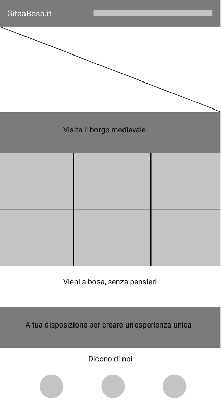
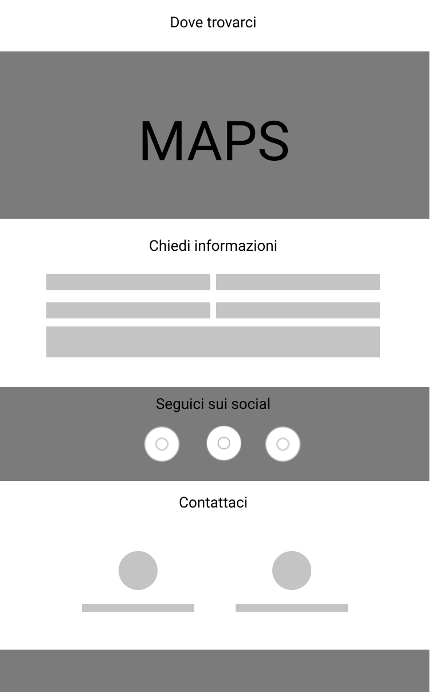
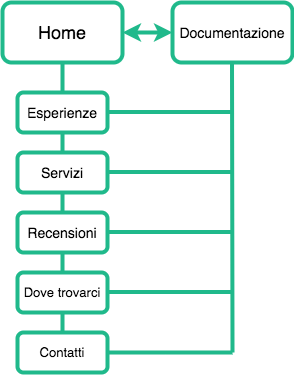
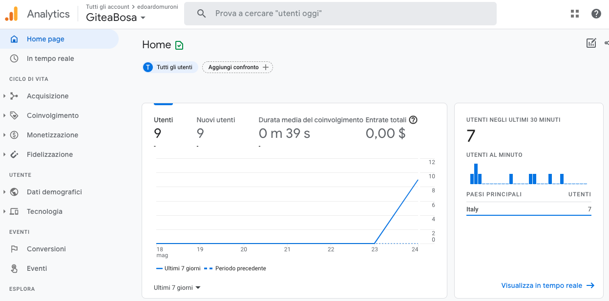
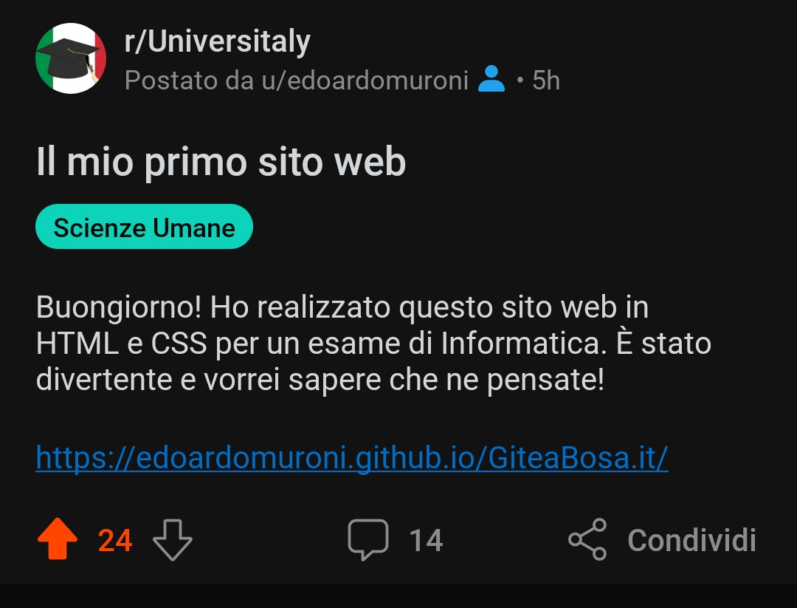
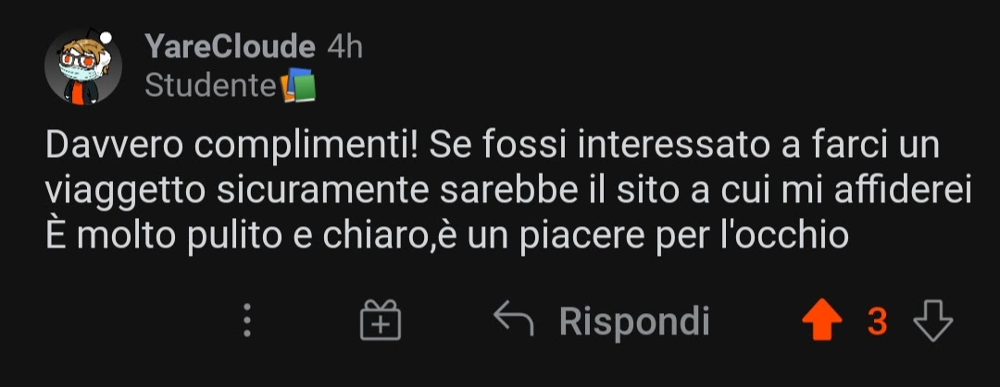
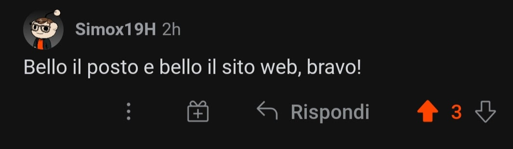
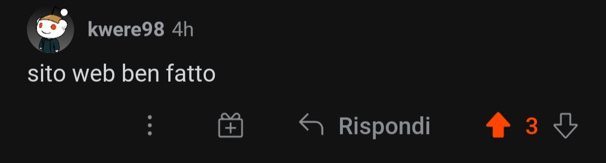
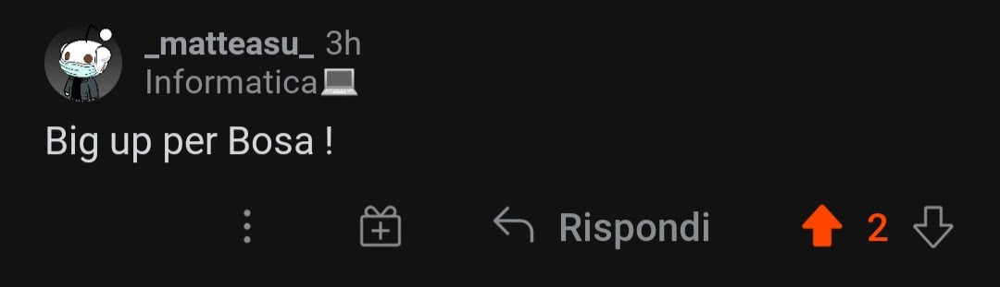

Il sito si propone come portale di prenotazione di gite turistiche per gruppi che vogliono visitare la città di Bosa. La funzione principale è quella di presentare le attrattive della cittadina e di fornire dei pacchetti personalizzati per le esigenze dei clienti.
Il sito è realizzato per mettere in contatto i turisti con l’agenzia e per mostrare le attrattive della città. L’intenzione è quella di attirare prenotazioni da parte dei clienti interessati. Il target primario è costituito da gite scolastiche, gruppi e famiglie che vogliono passare una giornata a Bosa. I siti presi in esame sono principalmente di altre agenzie o operatori turistici locali. Nello specifico i competitor analizzati sono:
Il sito è stato realizzato per essere navigabile in modo semplice, per questa ragione ho scelto di utilizzare una struttura single-page. La scelta del verde richiama il colore della natura da cui la città è circondata e il colore del fiume che la attraversa. Il font utilizzato è il Roboto, selezionato per la sua leggibilità e adatto a tutte le dimensioni. Di seguito ho riportato i wireframe e il diagramma di organizzazione del sito.
  Il sito è stato realizzato utilizzando HTML5, CSS3 e Javascript. Al fine di velocizzare la creazione ho utilizzato delle librerie di codice (Bootstrap), ho inserito il font con Google Fonts e le icone con Fontawesome.
Il principale problema dei siti competitor è l’aspetto grafico. I contenuti sono nella maggior parte dei casi consistenti ma mancano di una organizzazione lineare e una presentazione efficace. Gli esempi presi in esame non risultano intuitivi ad un primo sguardo e affaticano l’utente con eccessive quantità di testo.
Lo scopo del sito è quello di fare da vetrina per le attività dell’agenzia e mettere in mostra le bellezze della cittadina. Perciò il sito descrive i valori dell’agenzia e i suoi servizi, con l’obiettivo di convertire i visitatori in clienti.
Il sito verrà promosso attraverso delle campagne Search di Google Ads e anche attraverso delle mailing list create su MailChimp, costituite dai precedenti clienti dell’agenzia. I risultati delle campagne verrano analizzati attraverso Google Analytics.
Il sito è stato condiviso su Reddit, ricevendo diversi upvote e commenti.
    